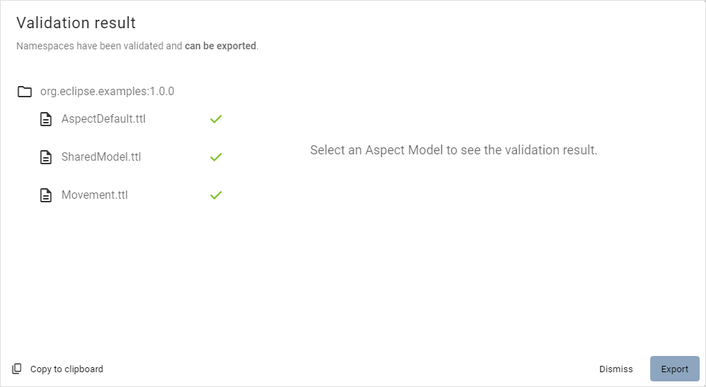
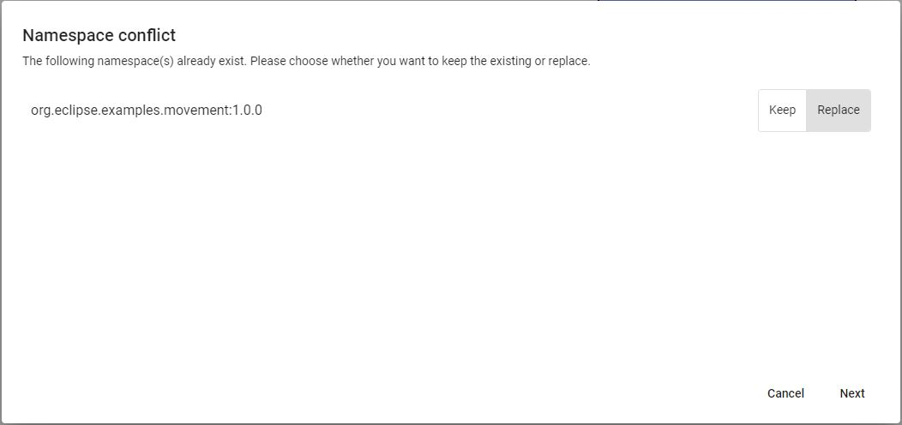

Import and export namespaces
For general information on external references, see Namespaces and external references.
Import namespaces
To import a package with namespaces, proceed as follows:
-
Click New/Load in the toolbar.
-
Click Import Package.
→ An Explorer window opens.
-
Navigate to the package ZIP file which contains a single namespace.
-
Click Open to confirm your selection.
→ After confirmation, the files inside the ZIP file will be validated.

-
Click on files in the summary dialog to view the status of it.
 -
Click Copy to clipboard to copy the summary in a JSON-format file for further improvements.
-
Click on one of the options to choose what happens with already existing namespaces.
-
Click Keep to keep the existing namespace.
-
Click Replace to replace the namespace in the Workspace.

-
-
Click Import to move your files into the Workspace.
→ Now your namespaces are added to the recent model.
Export namespaces
To export a namespace, proceed as follows:
-
Click Save in the toolbar.
→ A drop-down menu appears.
-
Click Export Namespace.
-
Select the available namespace.

-
Click Validate.
→ After validation is done, a summary dialog similar to the one for namespace import will be displayed. If the validation has files with errors, the namespace cannot be exported.

-
Click Export.
→ The chosen namespace will be exported.